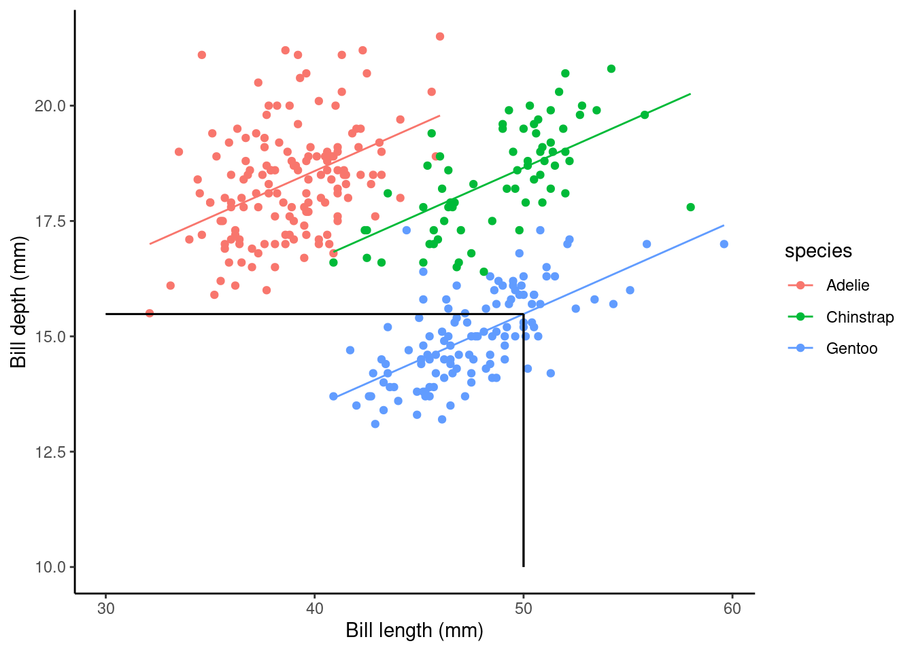
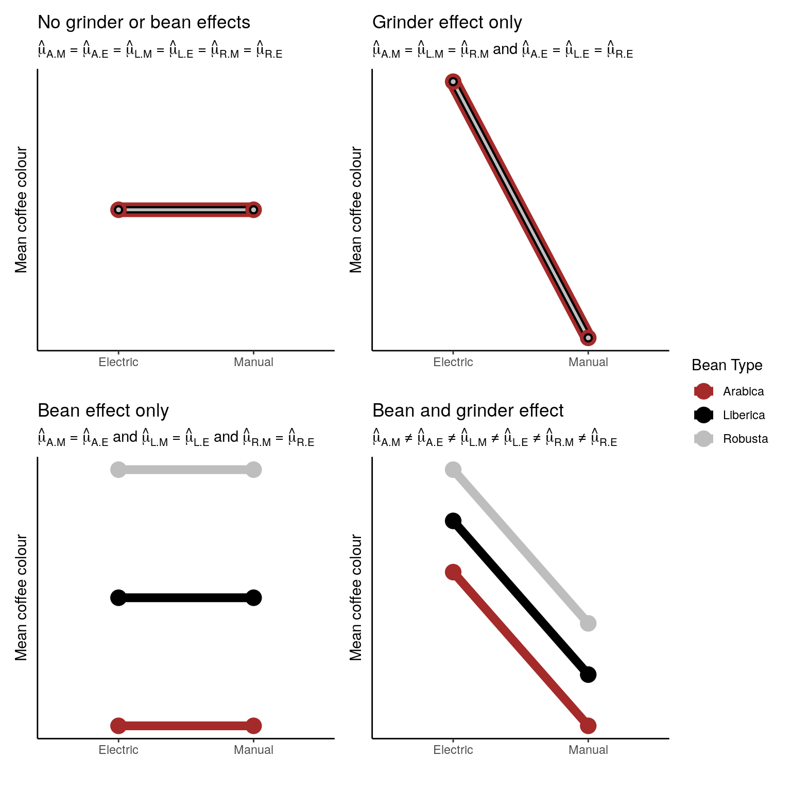

Inference for a linear model
After all that what do estimated parameters mean? Assuming our model assumptions are met we can draw inference based on the estimated parameter values.
Point prediction
Using the slm_sp model we can make a point prediction for the expected bill depth (mm) for Gentoo penguins with a bill length of 50mm.
Recall the model equation is
\[ \begin{aligned} \operatorname{bill\_depth\_mm} &= \alpha + \beta_{1}(\operatorname{bill\_length\_mm})\ + \\ &\quad \beta_{2}(\operatorname{species}_{\operatorname{Chinstrap}}) + \beta_{3}(\operatorname{species}_{\operatorname{Gentoo}})\ + \\ &\quad \epsilon \end{aligned} \]
The fitted equation is given as
\[ \begin{aligned} \operatorname{\widehat{bill\_depth\_mm}} &= 10.59 + 0.2(\operatorname{bill\_length\_mm})\ - \\ &\quad 1.93(\operatorname{species}_{\operatorname{Chinstrap}}) - 5.11(\operatorname{species}_{\operatorname{Gentoo}}) \end{aligned} \]
We can then simply substitute in the values:
\[\widehat{\text{bill depth}} = \hat{\alpha} + \hat{\beta_1}*50 + \hat{\beta_3}*1\] \[\downarrow\]
\[\widehat{\text{bill depth}} = 10.56 + 0.20*50 - 5.10*1\] \[\downarrow\]
\[15.47\text{mm}\]
Rather than by hand we can do this easily in R
## create new data frame with data we want to predict to
## the names have to match those in our original data frame
newdata <- data.frame(species = "Gentoo",bill_length_mm = 50)
## use predict() function
predict(slm_sp, newdata = newdata) ## more accurate than our by hand version!
## 1
## 15.48087What does this look like on a plot?

Confidence intervals for parameters
For the chosen slm_sp model we can get these simply by using confint(). By default the 95% intervals are returned:
cis <- confint(slm_sp)
cis
## 2.5 % 97.5 %
## (Intercept) 9.2486686 11.9356923
## bill_length_mm 0.1654842 0.2343044
## speciesChinstrap -2.3741187 -1.4922698
## speciesGentoo -5.4825531 -4.7294870So this tells us that For every 1mm increase in bill length we estimate the expected bill depth to increases between 0.165 and 0.234 mm
We estimate that the expected bill depth of a Chinstrap penguin is between 1.5 and 2.4 mm shallower than the Adelie penguin
Marginal predictions
One other thing we may want to do is give marginal precictions which show the marginal effect of a predictor, holding other variables constant.
The ggpredict() function from the ggeffects package can be used for this:
ggpredict(slm_sp, terms = "species")
## # Predicted values of bill_depth_mm
##
## species | Predicted | 95% CI
## --------------------------------------
## Adelie | 19.37 | [19.14, 19.61]
## Chinstrap | 17.44 | [17.16, 17.72]
## Gentoo | 14.27 | [14.06, 14.48]
##
## Adjusted for:
## * bill_length_mm = 43.92We can even plot the marginal effects:
ggpredict(slm_sp, terms = "species") %>%
ggplot(aes(x = x, y = predicted, label = round(predicted, 3))) +
geom_point() +
geom_errorbar(aes(ymin = conf.low, ymax = conf.high), width = .5) +
geom_text(hjust = -.2) +
ylab( "Predicted bill depth (mm)") + xlab("") +
ggtitle("Fitted means for each species with 95% CIs", subtitle = "Adjusted for bill_length_mm = 43.99") +
theme_classic()